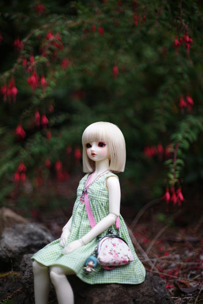
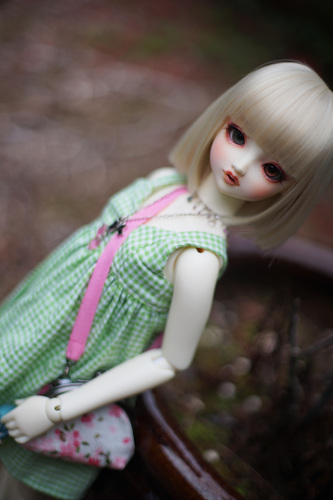
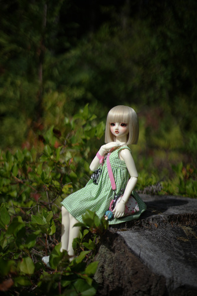
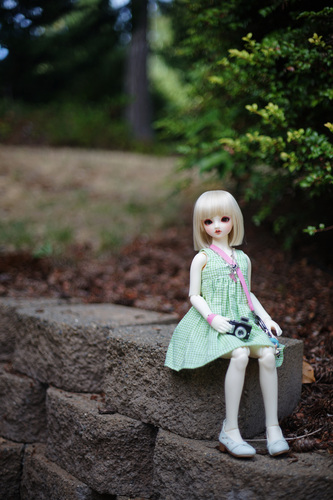
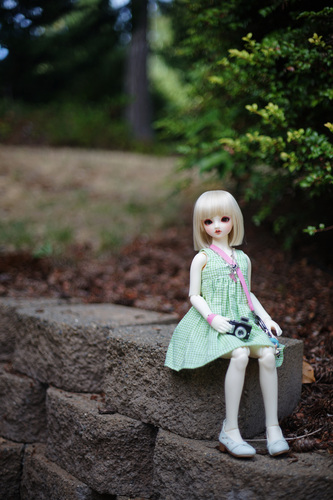
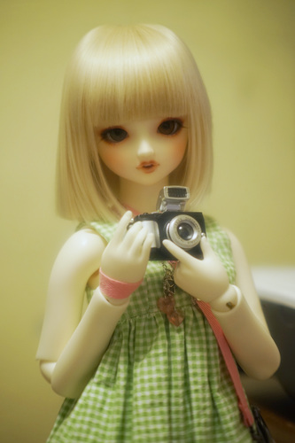

Have you seen new doll image board DollFun?? Please check it out! Scripple was very kind to have made it for us! I'll do my best to cross post photos there. They'll be in higher resolution too.
I took Hina out to The Grounds today for some photos. She's so cute she melts my kokoro ;______; I love Hina.
   

All taken with Canon FD 50mm f/1.4
There was all sorts of gross buggies out there! You should have seen them! I had Ryan take us on a tour after the photoshoot. We found 2 big old spiders and I found one tiny one on my leg :c
SD-H-01 are my least favorite pair of hands that I own for her. They're really boring spoon hands. But since they're spoons and I don't care for them, they're the pair I pack for when I don't want to worry about her fingers breaking off. She can't hold her camera nearly as well with them as the other mixed set that works perfectly.
I can't believe my little Hina uses manual focus!
With the excitement of Dolpa, I've been researching old US Dolpa info. I updated the USA one off page to include Dolpa one offs as well as auction models.
I went through a lot of old DoA discussion threads looking for the ones prior to 2015 and didn't have much luck. VolksUSA was not as kind with after event info until 2017.
Our gal hero Beamlette went above and beyond this year at the auction! The total of $86,710 came out higher than I can recall any auction model going for. Did the Chinese show up to bid against her? Good luck!! Beamlette is the most powerful Volks lover in the US!!! She has my full support!
Oddly enough, this auction model wasn't benefitting any charity. We all kind of assumed it would be another Make-A-Wish donation, but upon further inspection, it wasn't. Volks can afford to make this a yearly event now right??